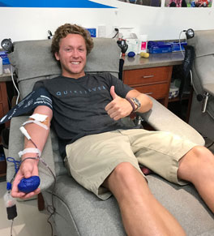
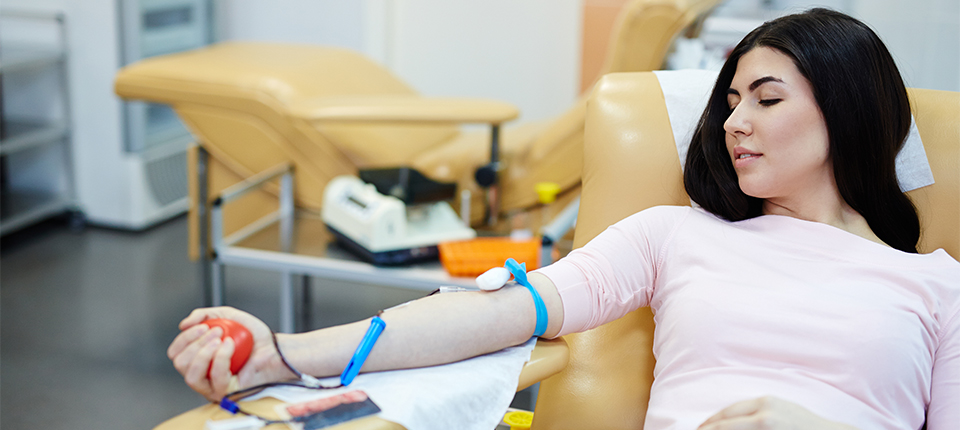
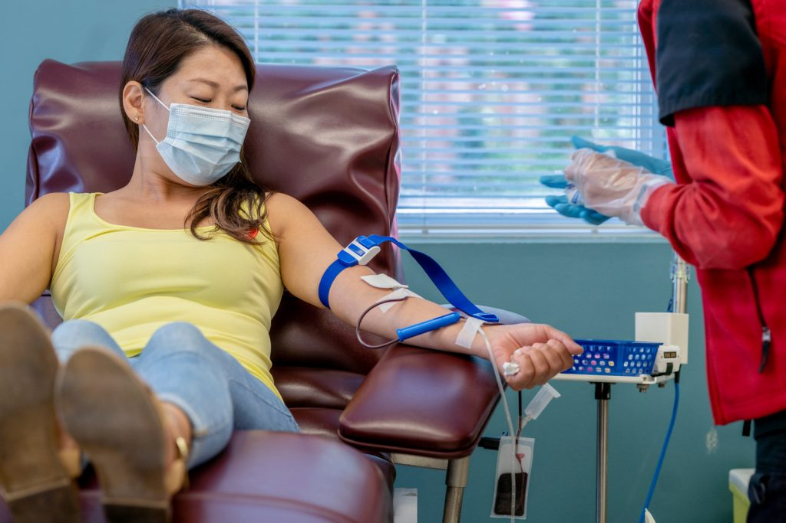

At Neefah Blood Charity Organization, we are committed to saving lives, one drop at a time.Our mission is to provide a reliable and compassionate platform for blood donation, ensuring that every patient in need has access to the vital resource that could mean the difference between life and death.
Founded with the belief that everyone deserves a fighting chance, Neefah Blood Charity Organization is a dedicated community of volunteers, donors, and healthcare professionals working together to combat the critical shortage of blood in our hospitals. We operate with transparency, integrity, and an unwavering commitment to the cause.
We aim to create a sustainable blood donation culture where giving blood becomes a routine act of kindness. Through educational campaigns, donor recruitment drives, and partnerships with healthcare institutions, we are building a network that ensures timely and adequate blood supply for emergencies, surgeries, and chronic conditions.
 Whether you're a first-time donor or a seasoned supporter, your involvement makes a difference. Together, we can save lives and bring hope to countless families. Explore our website to learn more about how you can contribute, whether through donation, volunteering, or spreading awareness.
Your support keeps the heartbeat of our mission alive. Join us in making a life-saving impact today.